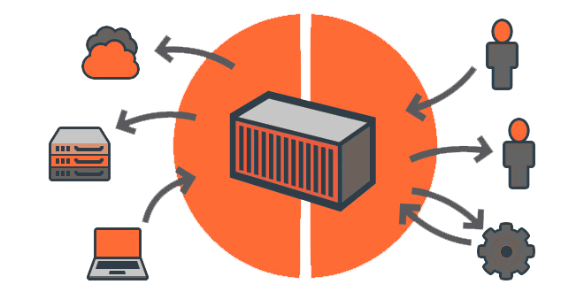

One Platform For All Operations
Docker comes with a unified framework for all apps be it monolith or microservices, Linux or Windows, on-premises or on the cloud. Docker is a standard container which ensures a smooth workflow for agile, secure, scalable and portable apps. Our Docker consulting services can help you to achieve a smooth CD/CI process.
Quicker Innovation at Any Scale
Docker containers can help developers to accelerate the delivery of new apps with features which support microservices architecture, all this is done by an automated deployment pipeline. New features can be deployed and rolled back in case of problems, thus catering to needs and demands of the average customer.
Smooth Transition
Docker has the ability to integrate with any existing environment. This is due to Open interfaces, APIs, and plugins which make it easy to integrate Docker and in fact a DevOps engineer can extend Docker to different systems to perform additional functions.
Any Platform For Any Phase
Docker is a solution which can secure and manage apps from the stage of build all way to deploy and every other step of the development cycle. Docker is a solution for a diverse range of platforms across the app lifecycle, be it Windows, Linux, on-premises or in the cloud, Docker provides support from development stage to the finished product.
Certified and Secure
With Docker you get enterprise-grade support, use Docker in production at scale according to your needs. Dockers come with certified infrastructure and plugins, with Docker DevOps engineers can build apps with certified containers and it is assured by a trusted ecosystem of technology alliances and development partners across the globe.
Kubernetes - Automating deployment, scaling, and management of containerized applications
Kubernetes is a production grade containerization solution developed by Google, for easily managing multiple containerized applications in a complex clustered environment. The point of this solution is to find better methods to manage related, distributed components across a diverse infrastructure. Our Kubernetes consulting services helped many organizations to streamline their CD/CI process.
The Storin Difference
 Docker Knowledge Acquisition & Implementation
Docker Knowledge Acquisition & Implementation
We at Storin can help you to understand how to leverage Docker, learn how Docker Consulting Services can help you and your firm from a neutral knowledgeable source. Our expert DevOps engineers can change your technical ecosystem by helping you to a balanced implementation of Docker.
Storin Docker Consulting Services can help your organization by improving the Docker application’s access to multiple end-users. This is done with improving efficiencies and removing any roadblocks in the backend processes of the application and this brings down costs associated with running the application. Storin can help your organization by scaling web services according to your needs so as to get improved uptime at an optimized cost.
Storin’s Docker Experts offer their valuable insights with respect to Docker implementation, lifecycle planning and many nuances associated with Docker. Our services associated with implementation consists of application enhancements, expert engagements, and access grants.
With rich experience of working with Docker, Storin’ Docker consulting services are for organizations who are ready to move from legacy architecture to modern Cloud services. We help our clients to individually design, implement and manage the transition. As the requirements change from organization to organization, so does our approach to them.
It is time for organizations for adopting Kubernetes for their CD/CI needs, Google’ containerization service has changed the landscape what are expectations from a containerization service.
Our Docker containerisation support engineers are available 24 x 7 to help you with any and all issue relating to strategic support cases, preventative notifications, and extensive remote and onsite engagement.
Docker Consulting by Storin
Experience Open source DevOps expertise with Storin. We help you realize the benefits of moving to an open source container management platform like Docker. The choice every DevOps engineer. Implement Docker to take the power back from your IT vendors. Our Docker products and consulting services can give you the freedom to innovate and experiment with no downtime at lowest costs.
Experience Production grade DevOps consulting with Storin. Streamline your CD/CI process like unheard efficiency at lowest costs, contact us so we can help you to navigate the tricky path to faster application development and delivery. With our Docker containerisation support, experts can point you and your team to the best Docker architecture which is best suited to needs and demands.